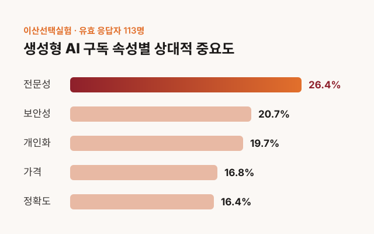

단순 평점 대신 이산선택실험을 사용했습니다
속성마다 중요도를 묻는 평점 설문은 대부분 ‘다 중요하다’로 끝나기 쉽습니다.가격과 기능 사이에서 무엇을 포기하는지 보려고, 가상 대안 중 하나를 고르게 하는 DCE를 사용했습니다.
설계 3개 대안 × 6개 세트, 응답자는 세트마다 하나만 선택
Project · 이산선택실험
소비자 113명에게 가상 구독 상품 중 하나를 고르게 하고, 조건부 로짓으로 무엇이 유료 구독을 결정하는지 추정했습니다. 설정한 속성 범위 안에서는 정확도보다 추론 전문성의 상대적 중요도가 가장 높았습니다.

추정한 효용 계수로 세 상품의 선택 확률을 바로 다시 계산합니다.속성을 바꿔 보세요.
Pj = exp(Vj) / Σ exp(Vk)기본값은 발표 자료의 시나리오이며, 기본 모형(m1)으로 계산하면 25.5%, 30.2%, 44.3%가 나옵니다. 지정한 세 대안 안에서의 모형 내 선택 확률일 뿐, 실제 시장점유율이나 전환율을 측정한 결과가 아닙니다. 미구독 대안은 포함하지 않았습니다.
Research question
사업자들은 대체로 모델 성능을 앞세워 가격을 정합니다.그 전제를 소비자 선택으로 확인해 보고 싶었습니다.
Experiment design
속성과 수준을 조합한 3개 대안을 한 세트로 묶어, 응답자마다 6개 세트를 제시했습니다.
| 속성 | 수준 1 (기준) | 수준 2 | 수준 3 | 수준 4 |
|---|---|---|---|---|
| 가격 | 무료 | $8 | $20 | $200 |
| 정확도 | 70% | 85% | 90% | 없음 |
| 보안성 | 낮음 | 보통 | 높음 | 없음 |
| 개인화 | 제한적 | 보통 | 고급 | 없음 |
| 전문성 | 일반 | 고급 | 전문가급 | 없음 |
Decisions
팀장으로서 설문 설계를 맡았고, 아래 결정들은 결과의 해석 범위를 정하는 일이기도 했습니다.
속성마다 중요도를 묻는 평점 설문은 대부분 ‘다 중요하다’로 끝나기 쉽습니다.가격과 기능 사이에서 무엇을 포기하는지 보려고, 가상 대안 중 하나를 고르게 하는 DCE를 사용했습니다.
설문 초안을 검토하다가 세 문항 정도에서 한 대안이 모든 속성에서 앞서는 우세안을 발견했습니다.이런 문항은 고민 없이 답이 정해져서 속성 사이의 교환 관계를 알려 주지 못합니다.팀장으로서 배포 일정이 늦어지는 것을 감수하고 속성 수준을 다시 정하자고 판단했습니다.
뒤로 갈수록 응답이 피로해지거나 앞 문항에 끌려가는 효과를 줄이고 싶었습니다.같은 6개 세트를 정순과 역순으로 나눠 배포하고, 분석 단계에서 문항 번호를 다시 맞췄습니다.
지불의사금액과 시장 시뮬레이션은 숫자가 커 보여서 과장되기 쉬운 결과입니다.WTP는 변화 단위를 함께 적고, 선택 확률은 실제 점유율과 구분해 표시했습니다.
Data pipeline
조건부 로짓은 한 행이 하나의 대안이어야 추정할 수 있어서, 이 변환이 전처리의 핵심이었습니다.
choice_1부터 choice_6까지를 time과 choice 두 열로 바꿨습니다.alt_id (1, 2, 3)로 대안을 구분했습니다.choice2를 코딩했습니다.left_join(data3, data4, by = c("time", "alt_id"))로 최종 2,034행을 만들었습니다.행 수 읽는 법 2,034행은 113명 × 6문항 × 3대안입니다. 113명이 답한 678개 선택 문항을 대안 단위로 표현한 것이고, 2,034명을 조사한 것은 아닙니다.
Model
효용은 Unjt = Vnjt + εnjt로 두었습니다.가격과 정확도는 연속형으로, 보안성, 개인화, 전문성은 최저 수준을 기준으로 한 더미변수로 코딩했습니다.
m1 = mlogit(choice2 ~ price + accuracy + security_mid + security_high +
personalization_mid + personalization_high +
reasoning_high + reasoning_expert | 0, data = m1_data)
| 변수 | Estimate | Std. Error | z-value | Pr(>|z|) |
|---|---|---|---|---|
| price | -0.00415875 | 0.00077879 | -5.3400 | <0.001 *** |
| accuracy | 0.04057130 | 0.01121802 | 3.6166 | <0.001 *** |
| security_mid | 0.18250982 | 0.13322238 | 1.3700 | 0.1707 |
| security_high | 1.02053457 | 0.24519941 | 4.1621 | <0.001 *** |
| personalization_mid | 0.00562367 | 0.12434933 | 0.0452 | 0.9639 |
| personalization_high | 0.97165840 | 0.19092963 | 5.0891 | <0.001 *** |
| reasoning_high | 0.66904458 | 0.13705901 | 4.8814 | <0.001 *** |
| reasoning_expert | 1.30621138 | 0.17640123 | 7.4048 | <0.001 *** |
Log-Likelihood = -683.55
가격만 음(-)의 계수를 보였고, 나머지 속성은 모두 양(+)이었습니다.보안성과 개인화의 중간 수준은 기준 수준과 유의한 차이를 확인하지 못했습니다. 효과가 없다는 결론과는 구분해서 읽었습니다.범주형 속성 가운데 기준 대비 계수가 가장 큰 것은 전문가급 전문성(+1.306)이었습니다.
Results
상대적 중요도는 속성별 부분가치 범위를 전체 범위의 합으로 나눈 값입니다.
정확도가 가장 중요할 것이라는 가설은 상대적 중요도 순위에서 지지되지 않았습니다.전문성 26.4%, 보안성 20.7%, 정확도 16.4%로, 기능 우선순위를 다시 검토할 근거를 얻었습니다.다만 순위 차이의 통계적 유의성은 따로 검정하지 않았고, 가격과 정확도의 수준 범위를 바꾸면 순위도 달라질 수 있습니다.
Willingness to pay
한계지불의사금액은 각 속성 계수를 가격 계수로 나눠 구한 점추정치입니다.
| 변화 | 기준 | 추정 WTP |
|---|---|---|
| 전문가급 전문성 | 일반 대비 | $314.1 |
| 높은 보안성 | 낮음 대비 | $245.4 |
| 고급 개인화 | 제한적 대비 | $233.6 |
| 고급 전문성 | 일반 대비 | $160.9 |
| 보통의 보안성 | 낮음 대비 | $43.9 |
| 정확도 | 1%p 상승 | $9.8 |
| 보통의 개인화 | 제한적 대비 | $1.4 |
읽는 법 범주형 속성은 기준 수준 대비 변화, 정확도는 1%p 변화에 대한 값이라 $314.1과 $9.8을 배수로 비교하지 않습니다. 일부 추정치는 제시한 최대 가격($200)을 넘고 신뢰구간이 없는 점추정치이므로, 실제 적정 구독료로 해석하지 않습니다.
Robustness
성별(남성 0, 여성 1)과 가격의 상호작용항을 추가해 세그먼트별 가격 민감도를 검정했습니다.
| 상호작용항 | Estimate | Std. Error | z-value | Pr(>|z|) |
|---|---|---|---|---|
| price × 여성 | -0.00040091 | 0.00149304 | -0.2685 | 0.7883 |
Log-Likelihood = -683.52
| 속성 | 남성 중요도 | 여성 중요도 | 남성 WTP | 여성 WTP |
|---|---|---|---|---|
| 전문성 | 26.67% | 26.23% | $331.14 | $300.59 |
| 보안성 | 20.83% | 20.50% | $258.73 | $234.86 |
| 개인화 | 19.83% | 19.52% | $246.33 | $223.61 |
| 가격 | 16.10% | 17.46% | 해당 없음 | 해당 없음 |
| 정확도 | 16.56% | 16.30% | $10.29 | $9.34 |
상호작용항은 통계적으로 유의하지 않았습니다 (p = 0.7883). 여성의 가격 계수 절댓값이 근소하게 크지만 의미를 두기 어려운 수준입니다.남녀 모두 전문성, 보안성, 개인화 순으로 중요도 순위가 같았습니다.다만 유의하지 않은 상호작용만으로 성별 차이가 없다거나 통합 마케팅이 낫다고 확정할 수는 없습니다.
Market simulation
| 제품 1 (기본형) | 제품 2 (생산성 특화) | 제품 3 (기업용) | |
|---|---|---|---|
| 가격 | 무료 | $8 | $20 |
| 정확도 | 85% | 90% | 85% |
| 보안성, 개인화 | 보통 | 보통 | 보통 |
| 전문성 | 고급 | 고급 | 전문가급 |
| 선택 확률 | 25.5% | 30.2% | 44.3% |
가장 비싼 제품 3이 가장 높은 선택 확률을 보였지만, 이는 지정한 세 대안 안에서의 모형 내 확률입니다.실제 출시 성과를 주장하기보다, 기업 구매 담당자 표본과 실제 구매 실험으로 확인할 후속 가설로 정리했습니다.위 직접 써 보기에서 같은 계산을 다른 조합으로 해 볼 수 있습니다.
Limits & next
원자료는 「신기술 시장분석」 기말 발표 자료(2조, 30장)이며, 이 페이지는 포트폴리오 열람용으로 재구성한 요약입니다.
More projects